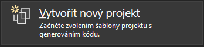
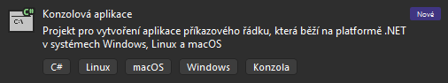
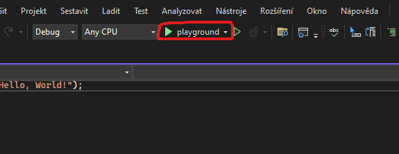

V této lekci se seznámíme s proměnnými a s tím jak je využívat.
První si musíme ovšem vytvořit projekt. Otevřeme si Visual Studio a klikneme na tlačítko Vytvořit nový projekt:
Poté si vybereme, jaký typ projektu budeme dělat. Zatím začneme v klasické Konzolové Aplikaci:
Nespleťte si to s konzolovou aplikací .net framework. Funkčnost je velice podobná, ale je zde potřeba řešit některé věci navíc a některé naopak nemusí fungovat stejným způsobem.
Pokud dostaneme na výběr verzi .NET rozhraní, vybereme to s dlouhodobou podporou (Long Time Support) a dáme "pokračovat".
Poté se nám spustí grafické rozhraní, kde vidíme kód. Výchozí kód by měl vypadat nějak takto:
Console.WriteLine("Hello, World!");
Tento kód můžeme spustit pomocí tlačítka nahoře:
Poté se nám spustí okno s naším programem, kde můžeme vidět nápis "Hello World!".
Hello, World!
C:\Users\fkomarek\source\repos\playground\bin\Debug\net6.0\playground.exe (process 17816) exited with code 0.
To automatically close the console when debugging stops, enable Tools->Options->Debugging->Automatically close the console when debugging stops.
Press any key to close this window . . .
V tomto kódu můžeme upravit, co se má do konzole vypsat. Aby to ovšem zůstalo jako text, musí to zůstat v uvozovkách, například:
Console.WriteLine("Ahoj, Světe!");
Do tohoto kódu můžeme také napsat matematický příklad, je ovšem potřeba odstranit uvozovky, jinak to bude program brát jako text:
Console.WriteLine(1+2);
Zapisování čísel do kódu tímto způsobem je ovšem docela těžkopádné, proto využíváme tzv. proměnné.
Proměnná je věc, do které můžeme uložit nějakou hodnotu a poté s ní pracovat. Existuje spoustu typů proměnných, ukážeme si některé z nich:
int je číslo (bez desetiných míst)
string je text
Existuje jich mnohem více, ale ukážeme si je později.
První je třeba proměnnou vytvořit, uděláme to pomocí kódu int/string [název];
a poté ho nastavíme na nějaké číslo pomocí [název] [hodnota].
Zkusíme si to na následujícím kódu:
int prvniCislo;
int druheCislo;
prvniCislo = 5;
druheCislo = 4;
string text;
text = "Součet dvou čísel je: ";
Console.Write(text);
Console.WriteLine(prvniCislo + druheCislo);
Console.WriteLine(text + " čísel " + prvniCislo + " a " + druheCislo + " je " + (prvniCislo + druheCislo));
Tento kód můžeme trochu zkrátit tím, že výpis obou proměnných dáme na jeden řádek.
Console.WriteLine(text + (prvniCislo + druheCislo));
Všimněte si, že pokud dáte vnitřní závorku pryč
(Console.WriteLine(text + prvniCislo + druheCislo);), program je nesečte,
ale napíše je vedle sebe, protože se k nim bude kvůli tomu stringu předtím chovat jako text a ne jako číslo.
Dále můžeme brát výstup od uživatele a zapisovat ho do proměnné, můžeme si to ukázat na tomto kódu:
Console.Write("Zadejte vaše jméno: ");
string jmeno = Console.ReadLine();
Console.WriteLine("Vaše jméno je: " + jmeno);
Výstup by měl vypadat nějak takto:
Zadejte vaše jméno: Filip
Vaše jméno je: Filip
Pokud budeme brát číslo, musíme ho první převést z textu na číslo:
Console.Write("Zadejte váš věk: ");
int cislo = Convert.ToInt32(Console.ReadLine());
Console.WriteLine("Váš věk je: " + cislo);
Console.WriteLine("Za dva roky váš věk bude: " + (cislo + 2));
Další věc, která je naprosto základní pro programování jsou podmínky.
Podmínka je věc, která se vyhodnotí na pravda nebo nepravda a podle toho se provede nějaký kód.
V C# se to dělá pomocí if a else.
Ukážeme si to na následujících příkladech:
Tento kód získá věk uživatele a poté zjistí, jestli je mladší nebo starší 18 let:
Console.Write("Zadejte váš věk: ");
int cislo = Convert.ToInt32(Console.ReadLine());
if (cislo >= 18)
{
Console.WriteLine("Je vám více než 18 let.");
}
else
{
Console.WriteLine("Jste mladší 18 let.");
}
Tento kód se vás zeptá na heslo a poté porovná pomocí podmínek heslo se dvoumi proměnnými:
string hesloHonza = "Mojeheslo1";
string hesloFilip = "Filipjebuh123";
Console.Write("Zadejte heslo: ");
string hesloUzivatel = Console.ReadLine();
if (hesloUzivatel == hesloHonza)
{
Console.WriteLine("Vítej Honzo.");
}
else if (hesloUzivatel == hesloFilip)
{
Console.WriteLine("Vítej Filipe.");
}
else
{
Console.WriteLine("Špatné heslo!");
}
Vytvořte kalkulačku, která se zeptá uživatele na dvě čísla a poté se zeptá, jestli je chtějí sečíst, odečíst, vynásobit nebo vydělit. Příklad výstupu:
Zadejte první číslo: 5
Zadejte druhé číslo: 4
Zadejte operaci: +
Součet čísel 5 a 4 je 9.
Sčítání, odčítání, násobení, dělení se dělá následujícím způsobem:
int cislo1 = 5;
int cislo2 = 4;
int scitani = cislo1 + cislo2;
int odcitani = cislo1 - cislo2;
int nasobeni = cislo1 * cislo2;
int deleni = cislo1 / cislo2;
Pokud budete mít jakékoliv otázky nebo problémy, nebojte se na mě obrátit.
Nepodařilo se načíst kód. Máte povolený JavaScript?
Pokud máte hotovo, zkuste ošetřit, aby nešlo dělit nulou.
Nepodařilo se načíst kód. Máte povolený JavaScript?
Zadání pro zkušenější programátory, jenž programovali už někdy dříve před tímto kroužkem: Vytvořte kalkulačku, kde bude uživatel zadávat celý příklad na jednom řádku. Nebojte se si cokoliv najít na internetu / vygooglit.
Nepodařilo se načíst kód. Máte povolený JavaScript?
Nepodařilo se načíst kód. Máte povolený JavaScript?